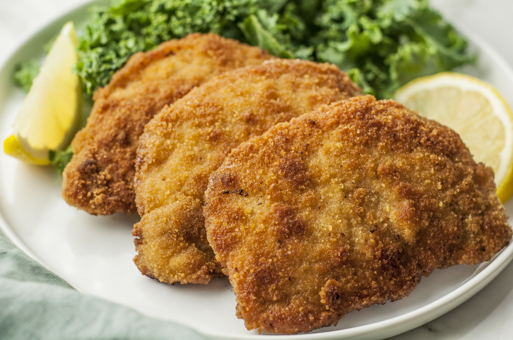

Wiener Schnitzel recipe

Description
Wiener Schnitzel is a traditional Austrian dish made from thinly pounded
veal cutlets.
The simplicity of the ingredients highlights the quality of the veal,
making it a beloved classic. Whether for a special occasion or a
comforting meal, Wiener Schnitzel never fails to impress.
Ingredients:
- 4 veal cutlets (about 150g each)
- Salt and pepper to taste
- 1 cup all-purpose flour
- 2 large eggs
- 1 cup breadcrumbs (preferably fresh)
- 1 cup vegetable oil or clarified butter (for frying)
- Lemon wedges (for serving)
Steps:
- Prepare the Cutlets:
-
Place each veal cutlet between two sheets of plastic wrap or parchment
paper.
-
Gently pound the cutlets with a meat mallet until they are about 1/4
inch thick.
- Season both sides of the cutlets with salt and pepper.
- Set Up Breading Station:
- Place the flour in a shallow dish.
- Beat the eggs in another shallow dish.
- Place the breadcrumbs in a third shallow dish.
- Bread the Cutlets:
- Dredge each cutlet in the flour, shaking off any excess.
- Dip the cutlet into the beaten eggs, ensuring it is fully coated.
- Press the cutlet into the breadcrumbs, making sure it is evenly coated. Do not press the breadcrumbs into the meat too firmly.
- Fry the Schnitzels:
- Heat the oil or clarified butter in a large skillet over medium-high heat.
- Once the oil is hot (but not smoking), add the breaded cutlets. Fry them in batches if necessary to avoid overcrowding the pan.
- Cook each cutlet for about 2-3 minutes on each side, or until golden brown and crispy.
- Transfer the cooked schnitzels to a paper towel-lined plate to drain any excess oil.
- Serve:
- Serve the Wiener Schnitzel hot with lemon wedges on the side.
- Traditional accompaniments include potato salad, cucumber salad, or fries.
Enjoy your homemade Wiener Schnitzel!
If you have any questions or need more tips, feel free to ask.
Back to homepage